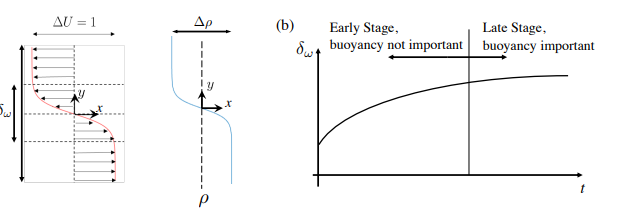
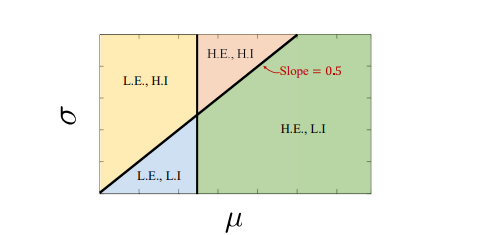

Accurate turbulence modeling remains one of the most persistent challenges in computational fluid dynamics. While Reynolds Averaged Navier Stokes (RANS) models are widely used for their efficiency, their accuracy is limited by empirical closures and unquantified uncertainties. Our project investigates how global epistemic uncertainty quantification can be applied to RANS models to identify which internal parameters such as model coefficients, tensor shapes, and tensor orientations are most suitable for calibration through machine learning.
We focus on a temporally evolving stratified shear layer, a canonical benchmark problem that captures complex flow features such as turbulence and density gradients. By systematically perturbing individual parameters within the RANS framework, we assess their impact on the prediction of key quantities of interest (QoIs), such as velocity profiles or mixing rates.
Parameters that lead to high errors but low predictive variance are flagged as strong candidates for calibration, since they consistently degrade performance without alerting the model to its own uncertainty.
We conduct global sensitivity and uncertainty analysis, propagating input perturbations through the RANS solver and measuring output variance across time. This enables us to separate parameters that introduce irreducible error from those whose influence may be corrected through data driven modeling.
The ultimate goal is to inform the design of physics informed neural networks (PINNs) that augment RANS models by learning corrections only where traditional modeling fails.
 My contribution involved designing the perturbation framework, implementing the uncertainty propagation pipeline, and analyzing the temporal evolution of prediction errors. This required integrating custom perturbation routines, automating batch simulations, and post processing time dependent QoIs across ensemble runs.
The results provide a principled way to identify which components of a turbulence model are most responsible for inaccurate predictions and which are worth targeting with machine learning. This work forms a foundation for future development of hybrid RANS ML models that retain physical structure while learning only the necessary corrections.